Co-op Commander Guide: Alarak
Highlord of the Tal'darim
Sections on this Page
Commander Summary
Alarak uses the presence of his own army to improve the power of his own abilities. He has powerful army units that can deal large amounts of damage in a short period of time.

Level Unlocks
| Level/Icon | Name | Description |
|---|---|---|
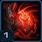 |
Soul Absorption |
|
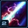 |
Overcharge Amplification | Structure Overcharge now also grants a Barrier that absorbs up to 400 damage. |
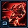 |
Aggressive Tactics | Increases the range of Alarak's Deadly Charge by 3 and reduces its cooldown by 5 seconds. |
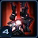 |
Death Council Upgrade Cache |
Unlocks the following upgrades at the Death Council:
|
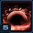 |
Empower Me | Unlocks Alarak's Empower Me ability, which grants him increased attack and ability damage for each nearby friendly unit. This effect lasts for 20 seconds. |
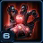 |
Robotics Bay Upgrade Cache |
Unlocks the following upgrades at the Robotics Bay:
|
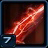 |
Lightning Surge | Sacrificing a supplicant causes Alarak's next Deadly Charge to deal an additional 50 damage to 4 enemy units near the primary target. |
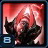 |
New Unit: Ascendant |
Potent psionic master. Can use Psionic Orb, Mind Blast and Sacrifice. Can attack ground units. |
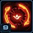 |
Havoc Upgrade Cache |
Unlocks the following upgrades at the Cybernetics Core:
|
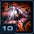 |
Summon Death Fleet | Unlocks the ability to warp in a Tal'darim Mothership and an escort of destroyers with timed life. Summon the Death Fleet from the top panel. |
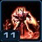 |
Overpowered | Alarak's attacks deal area damage while Empower Me is active. |
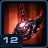 |
Ascendant Upgrade Cache |
Unlocks the following upgrades at the ascendant archives:
|
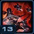 |
Burning Skies | Unlocks the mothership's Thermal Lance ability and warps in 4 additional destroyers when summoning the Death Fleet. |
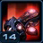 |
Alarak Upgrade Cache |
Unlocks the following upgrades at the Forge:
|
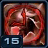 |
Wrath of the Highlord | Reduces the cooldown of Alarak's Deadly Charge by 10 seconds and Destruction Wave by 5 seconds whenever a supplicant is sacrificed. |
Highlighted rows denote large power spikes for the commander.
Achievements
The commander-specific achievements for Alarak are:
| Achievement | Name | Description |
|---|---|---|
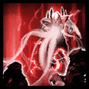 |
A Good Day to Die | Sacrifice 500 Supplicants to Alarak or Ascendants. |
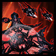 |
Fleeting Death | Deal 50,000 damage with the Death Fleet. |
| Power Play | Deal 100,000 damage with Alarak while he is empowered. | |
| You're Welcome | Use Structure Overcharge on allied structures to deal 30,000 damage. |
Calldowns
The calldowns for Alarak, at level 15, with no mastery points added are:
| Calldown | Name | Description | Recommended Usage | Numbers |
|---|---|---|---|---|
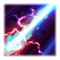 |
Structure Overcharge | Energizes target friendly structure or War Prism in Phasing Mode, allowing it to attack nearby enemy ground and air units. |
|
|
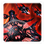 |
Summon Death Fleet | Warps in a Tal'Darim Mothership and 8 Destroyers that are controllable and will fight for 60 seconds. |
|
|
The Summon Death Fleet ability brings a Tal'Darim Mothership onto the battlefield. This unit has abilities itself, shown below:
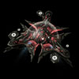
Mothership
| Ability | Name | Description | Cooldown |
|---|---|---|---|
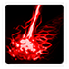 |
Thermal Lance | Deals 20 damage to all enemies in a straight line up to 10 range away. | 1 second |
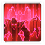 |
Mass Teleport | Teleports the Mothership and all nearby units you control to target friendly unit or structure's location. | 0 seconds* |
The Summon Death Fleet ability also brings Destroyers onto the battlefield. They do not have abilities or upgrades. Additionally, their bounce damage is not affected by attack upgrades.
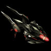
Destroyer
*If using the Shadow of Death prestige, this cooldown is increased to 60s, and no longer teleports allied units.
Sub-Ascension Leveling
Difficulty: Moderate
Use a Slayer/Supplicant build as your main attack force. Use Alarak's Destruction Wave ability to push enemy units away from your army. Additionally, ensure you have a War Prism which you can Overcharge to provide you with additional DPS when pushing into enemy bases. Clear your expansion with two Overcharges.
While leveling through Mastery levels, allocate points into Power Set 3's Structure Overcharge mastery until you hit the desired number of points, before allocating them to Chrono Boost efficiency.
Masteries
Below are the three Power Sets for Alarak with the recommended point allocations for each. Note that these are meant to serve a general, all-purpose build that is effective across all maps with no Prestiges selected. You are highly encourged to change these masteries to suit your playstyle and particular challenges you face (e.g. Weekly Mutations).
Power Set 1:
| Power | Value | Recommended Points to Add | Further Considerations |
|---|---|---|---|
| Alarak Attack Damage | 1 per point 30 maximum |
? | The choice here mostly depends on how you use Alarak and if you prefer to use skill-based units (like Ascendants) or attack-based units (like Wrathwalkers). |
| Combat Unit Attack Speed | 0.5% per point 15% maximum |
? |
If you are working with an Ascendant-based build, Alarak Attack Damage is recommended as Ascendants do not benefit much from the other mastery.
Power Set 2:
| Power | Value | Recommended Points to Add | Further Considerations |
|---|---|---|---|
| Empower Me Duration | 1 sec per point 30 sec maximum |
? | Empower Me Duration can provide a lot of mileage for mastery points, especially when used with the No Cooldown Alarak technique. However, it does require a significantly higher level of mechanical ability. |
| Death Fleet Cooldown | -4 sec per point -120 sec maximum |
? |
This is a personal preference. Those that use the No Cooldown Alarak technique (below) may want to consider putting all points into Empower Me Duration instead.
Power Set 3:
| Power | Value | Recommended Points to Add | Further Considerations |
|---|---|---|---|
| Structure Overcharge Shield and Attack Speed | 2% per point 60% maximum |
22 | Players that prefer to use Structure Overcharges more offensively can choose to add more points into that respective mastery. It is generally not recommended to go below 22 points, as it will prevent the Structure Overcharge from clearing expansions. |
| Chrono Boost Efficiency | 1% per point 30% maximum |
8 |
The 22 points into the first mastery is just enough to clear both, the main and the gas rocks at your expansion. The rest are put into Chrono Boost.
Prestiges
Below are the prestiges for Alarak. Note that "Effective Level" is the level at which the prestige achieves it full effect.
| Level | Name | Description | Effective Level | Notes |
|---|---|---|---|---|
| 1 | Artificer of Souls |
|
1 |
|
| This prestige adds further utility to Supplicant deaths by allowing them to buff Alarak's mech units. This does mean that Alarak cannot 1-shot Zergling waves by using Destruction Wave. However, adding Ascendants to deal with attack waves is very beneficial anyway, as Supplicants can be sacrificed for Power Overwhelming stacks as well as buffing Mech units. | ||||
| Level | Name | Description | Effective Level | Notes |
|---|---|---|---|---|
| 2 | Tyrant Ascendant |
|
5 | None |
| This prestige sacrifices Alarak's mobility from his Death Fleet to add extra power to Alarak pushes by making his Empower Me more frequent. Death Fleet damage is not considered due to its relatively low damage compared to Alarak's units. For players that are aware of mission timings, they will very rarely get caught unawares, and combined with the No Cooldown Alarak technique, this prestige can be very valuable. | ||||
| Level | Name | Description | Effective Level | Notes |
|---|---|---|---|---|
| 3 | Shadow of Death |
|
10 |
|
| A trap in using this prestige is using it to mass up a large fleet of air units. Because Destroyers deal small amounts of damage with a high attack speed, they are heavily weakened by armored targets, especially considering that bounces are unaffected by Attack upgrades. They are also susceptible to splash damage, like Parasitic Bombs. A better utility for this prestige would be to invest in the initial Mothership for a big early-game power spike, and then use the Mothership as a mobility tool throughout the course of the mission. | ||||
Depending on the player's prefered playstyle, Artificer of Souls or Tyrant Ascendant both offer Alarak potential power level increases to their respective playstyles. Those two prestiges are recommended for general play.
Hero Unit
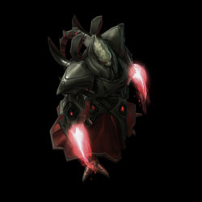
Spawn time: 4:00
Respawn time: 1:00
The abilities for Alarak are:
| Ability | Name | Description | Cooldown |
|---|---|---|---|
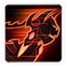 |
Deadly Charge | Alarak intercepts target enemy unit and strikes it for 200 damage. | 10 seconds |
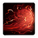 |
Destruction Wave | Unleashes a massive wave of force in a straight line, dealing 50 damage to enemies in its path and knocking them back. | 5 seconds |
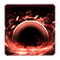 |
Empower Me | Alarak's attacks and abilities deal increased damage for each allied unit nearby. Mechanical units grant him double the power. Resets the cooldown of Deadly Charge and Destruction Wave. Biological units provide a 5% damage bonus per supply up to 100 supply, and then provide 2.5% per supply onwards. Mechanical units provide 10% damage bonus per supply up to 100 supply, and then provide 5% per supply onwards. Supply count is additive, with biological units favored first. So if you have 100 supply in bio and 1 supply in mechanical units, the mechanical units will provide the reduced rate of 5%. |
240 seconds |
The upgrades for Alarak are:
| Upgrade | Name | Effect |  / / |
Research Time |
|---|---|---|---|---|
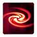 |
Imposing Presence | Allows Alarak's attacks to stun enemy units for 2 seconds. Heroic units are slowed. |
150/150 | 90 seconds |
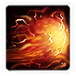 |
Telekinesis | Increases the knockback distance of Alarak's Destruction Wave by 100%. | 150/150 | 90 seconds |
Recommended Army Composition
The recommended army composition for Alarak is below. Note that this assumes no Prestige talent selected and recommended Mastery Allocations. This is a basic recommendation for your army framework. It is recommended to gain an understanding for each of the units in the Units section and further add tech units so that you are able to better handle the situations you face.
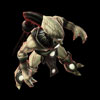
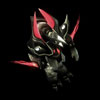
Ascendants, with the Power Overwhelming upgrades, can deal extremely large amounts of damage to units, allowing Alarak to handle attack waves and unit-based objectives with ease. Supplicants are required for Alarak's Empower Me as well as keeping Ascendants filled with energy through Sacrifice.
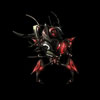
Add Wrathwalkers to your army composition if you are dealing with objectives that are structures.
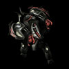
Add Vanguards to your army if you need extra damage sustain and splash damage.
Combat Units
For more information on Alarak's unit stats, comparison between units and upgrade calculations, visit the Data Tables page.
Alarak's combat units are listed below:
Supplicant
- Should be the core of Alarak's army.
- First unit to be sacrificed to Alarak if he dies.
- Sacrificed to Ascendants to raise their power level.
Skills: None
Upgrades:
| Upgrade | Name | Effect | / |
Research Time |
|---|---|---|---|---|
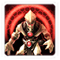 |
Blood Shields | Reduces the damage enemies deal to the Supplicant's shields. Adds 2 shield armor. | 100/100 | 60 seconds |
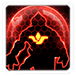 |
Soul Augmentation | Supplicants gain +25 shields. | 150/150 | 90 seconds |
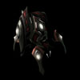
Slayer
- Should not be made en-masse unless there is a very good reason.
- Useful against compositions with a minimal air presence.
- Does great damage against armored targets.
Skills:
| Skill | Name | Description | Cooldown | Energy Cost |
|---|---|---|---|---|
| Phase Blink | Teleports the Slayer to a nearby target location. Ability can only be used once every 8 seconds. After using Phase Blink, the Slayer's next attack within 8 seconds will deal double damage. | 8s | 0 |
Upgrades:
| Upgrade | Name | Effect | / |
Research Time |
|---|---|---|---|---|
 |
Phase Blink | Allows Slayers to teleport to a nearby target location. After using Phase Blink, the Slayer's next attack within 8 seconds will deal double damage. | 100/100 | 60 seconds |
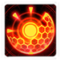 |
Phasing Armor | Prevents Slayers from taking damage for 2 seconds after being attacked. Cannot occur more than once every 5 seconds. | 150/150 | 90 seconds |
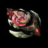
Havoc
- Has a force-field ability to allow you to funnel enemies into choke points.
- Has a passive that increases friendly units attack range (within a range of 4) by 2.
- Force-field ability is highly situational, and rendered useless through Massive enemy units. Can be used on mutators like Fatal Attraction.
- Target-lock ability increases damage dealt to a target by 15%.
- Very powerful when combined with Ascendants.
- Good idea to build some at the start for detection.
Skills:
| Skill | Name | Description | Cooldown | Energy Cost |
|---|---|---|---|---|
| Target Lock | Increases damage dealt to target enemy unit by 15%. Effect lasts as long as the Havoc remains locked onto the target. | 3s | 0 | |
| Force Field | Creates a solid barrier that lasts for 15 seconds and impedes movement of ground units. Massive units shatter Force Fields on contact. (3 charges max). |
15s | 0 |
Upgrades:
| Upgrade | Name | Effect | / |
Research Time |
|---|---|---|---|---|
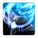 |
Cloaking Module | Allows Havocs to remain permanently cloaked. | 100/100 | 60 seconds |
| Bloodshard Resonance | Increases the radius of the Havoc's Squad Sight and the range of Target Lock and Force Field. | 150/150 | 90 seconds | |
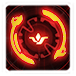 |
Detect Weakness | Increases the damage bonus from the Havoc's Target Lock by an additional 15%. | 150/150 | 90 seconds |
Ascendant
- Mind-blast ability provides great single-target damage.
- Psionic Orb ability provides a good way of clearing attack waves.
- Best have their abilities bound to Rapidfire for quick casting of these abilities.
- They draw a high amount of aggro and need to be protected, especially in the early game, when they are most fragile.
- They get stronger as you sacrifice Supplicants with Power Overwhelming researched, gaining up to 1040 shields and can deal up to 700 damage with a single Mind Blast, and 35 DPS with their Psionic Orb
- Sacrifice will be auto-cast when the Ascendant has less than 100 energy.
Skills:
| Skill | Name | Description | Cooldown | Energy Cost |
|---|---|---|---|---|
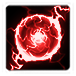 |
Psionic Orb | Unleashes a traveling Psionic Orb that deals 10 damage per second to all enemies along its path. | 2s | 100 |
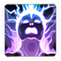 |
Mind Blast | Deals 200 damage to target enemy unit. Can target ground and air units. |
8s | 100 |
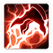 |
Sacrifice | Sacrifices a Supplicant to fully restore the Ascendant's energy. Can only target Supplicants. |
60 seconds | 0 |
Upgrades:
| Upgrade | Name | Effect | / |
Research Time |
|---|---|---|---|---|
 |
Mind Blast | Allows Ascendants to use Mind Blast, which deals 200 damage to target enemy unit. Can target ground and air units. |
100/100 | 60 seconds |
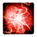 |
Chaotic Attunement | Increases the travel distance of the Ascendant's Psionic Orb by 25%. | 100/100 | 60 seconds |
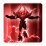 |
Power Overwhelming | Ascendants permanently gain +25% ability damage and +100 shields each time they use Sacrifice. This effect stacks up to a maximum of 10. |
100/100 | 60 seconds |
Vanguard
- Attacks do not track targets and can be dodged.
- Ineffective against fast-moving targets.
- Useful in small quantities on infested maps.
Skills: None
Upgrades:
| Upgrade | Name | Effect | / |
Research Time |
|---|---|---|---|---|
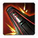 |
Fusion Mortars | Increases the damage Vanguards deal to armored units by 7. | 100/100 | 60 seconds |
| Matter Dispersion | Increases the area of the Vanguard's splash damage by 50%. | 100/100 | 60 seconds |
Wrathwalker
- Deals bonus damage to structures, making it extremely effective at taking down some objectives.
- Can be upgraded to attack air targets.
- Useful alternative for anti-air compositions if not using Ascendants.
Skills: None
Upgrades:
| Upgrade | Name | Effect | / |
Research Time |
|---|---|---|---|---|
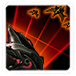 |
Aerial Tracking | Allows Wrathwalkers to attack air units. | 100/100 | 60 seconds |
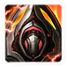 |
Rapid Power Cycling | Reduces the charging time (2 seconds) and the weapon speed (0.5) of the Wrathwalker's Charged Blast. | 100/100 | 60 seconds |
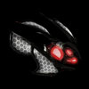
War Prism
- Its attack is not very useful.
- Photon Overcharge can be used if it is placed into Phasing mode.
- Great alternative to pylons for reinforcing your army.
Skills: None
Upgrades: None
Build Order
Below is the standard economic build order for Alarak. For more information on how to read and construct your own build orders, please check the Build Order Theory page.
14 Pylon
15 Assimilator (No Probes)
18 Pylon (Overcharge)
20 Nexus
Probes -> Assimilator
21 Assimilator
22 Gateway
Gameplay Guide
Playstyle Traps
A possible playstyle trap is to focus on building a mass of Supplicants without adding any other tech units. While Supplicants are used to keep Alarak alive, and massing a large number increases Alarak's power when he uses Empower Me, Supplicants do not have a high DPS by themselves. Specific tech units (Ascendants, Wrathwalkers, etc.) will be needed to further improve a player's performance in the mission.
Fast Expanding
One of the perks of playing Alarak is his ability to fast-expand, even on contested maps. While other commanders will need to wait for their hero unit to spawn, or make an army to clear contested expansions, Alarak can use a probe with an overcharged pylon to clear contested expansions.
Below are pictures that show how to fast-expand on maps. These require a lot of practice to pull off, but can put you ahead economically. It is also advisable to fast-expand with two probes, one as a backup in case you lose the first one to prevent you from wasting an overcharge. You will be using these probes to get vision for the Overcharge.
| Map | Race | Player 1 Expansion | Player 2 Expansion |
|---|---|---|---|
| Chain of Ascension | 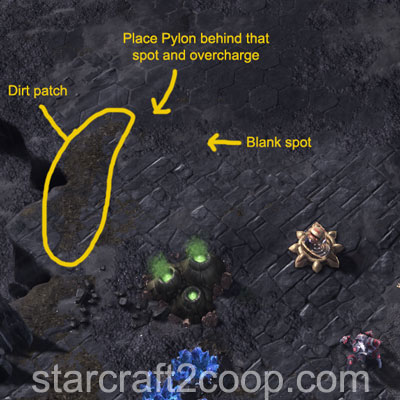 |
||
| Cradle of Death | Extremely difficult to fast-expand. The general idea is to place a Pylon and overcharge it to clear enemy defenders. Once the defenders are cleared, the Pylon needs to be cancelled before it is complete. Two overcharges are required. | ||
| Dead of Night | No contested expansion | ||
| Lock & Load | No contested expansion | ||
| Malwarfare | |||
| Miner Evacuation | Race doesn't affect Expansion | ||
| Mist Opportunities | No contested expansion | ||
| Oblivion Express | No contested expansion | ||
| Part & Parcel* | |||
| Rifts to Korhal | No contested expansion | ||
| Scythe of Amon** | Race doesn't affect Expansion | ||
| Temple of the Past | No contested expansion | ||
| The Vermillion Problem | |||
| Void Launch | No contested expansion | ||
| Void Thrashing | No contested expansion | ||
* Zerg has been intentionally omitted from Part & Parcel due to the inconsistency in fast-expanding. This is due to a number of reasons:
- Defense Bots are present on the map, and they move randomly. They have a long leash which means they do not deaggro very quickly.
- There are a large number of Zerg units scattered near the ramps, requiring very precise pathing.
** Fast-expanding on Scythe of Amon means you have to clear the Sliver at the expansion. This is because of the Void Rift that will keep spawning units. Destroying the Void Rift does not solve the problem as it will respawn unless the Sliver is destroyed. You will need two Overcharges to destroy the first Sliver and any units nearby.
No Cooldown Alarak
The "No Cooldown Alarak" technique takes advantage of the "Wrath of the Highlord" upgrade for Alarak. Whenver a Supplicant is sacrificed (either to Alarak or an Ascendant), Alarak's abilities are reset off cooldown allowing him to spam his abilities repeatedly. Combined with Empower Me, this can completely devastate enemy camps and hard-to-push locations.
This technique is sometimes called the "1qe2c" technique, named after the hotkeys assigned to Alarak (1) and his Ascendants + Supplicants (2). The cycle is as follows:
- Select Alarak (1)
- Use both of Alarak's abilities (Q and E)
- Select the Ascendants (2)
- Cast "Sacrifice" (C)
Below is an example of what the technique looks like.
The above technique is quite difficult to master and requires a lot of practice, but you can see its power when dealing with the attack wave. By targeting a high-HP unit with Q, you can not only deal damage to it, but also push it back along with the rest of the attack wave.
Note: This technique only works due to the Wrath of the Highlord buff you receive at Commander Level 15. Additionally, this buff only applies within 15 range. The below picture gives you an example of the maximum distance this can be used.
In the picture above, the Ascendants are at roughly the maximum possible range to allow for Alarak's skill cooldowns to be reset from Wrath of the Highlord.
A detailed video of this technique is shown below
Playstyle Tips
- Clear all non-contested expansions with your first photon overcharge and a pylon.
- Mastering fast-expanding (above) can put you ahead economically.
- Alarak will sacrifice any unit to keep himself alive, including more expensive Robo units. Ensure you have plenty of Supplicants near Alarak to prevent him from sacrificing those more expensive units.
- If going for a pure Ascendant build, manually sacrificing Supplicants will allow your Ascendants to grow much more quickly.
- Getting the Soul Augmentation upgrade pushes Supplicants past the vitality breakpoint for Battlecruiser Yamato cannons, allowing them to be used to draw out Yamato Cannons so that your more expensive units do not.
- More skilled players can use the No Cooldown Alarak technique above with Empower Me to completely decimate enemy bases.
Video Guides
The below videos demonstrate the various fast expands explained earlier.